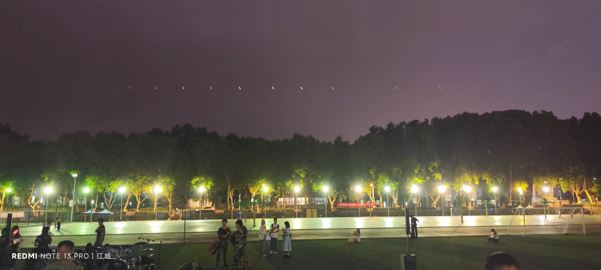
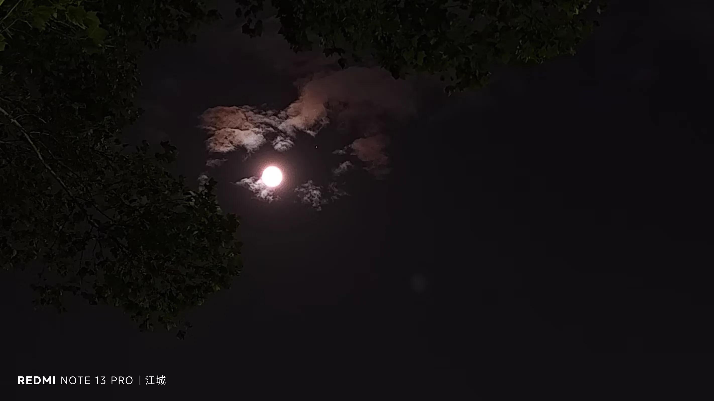
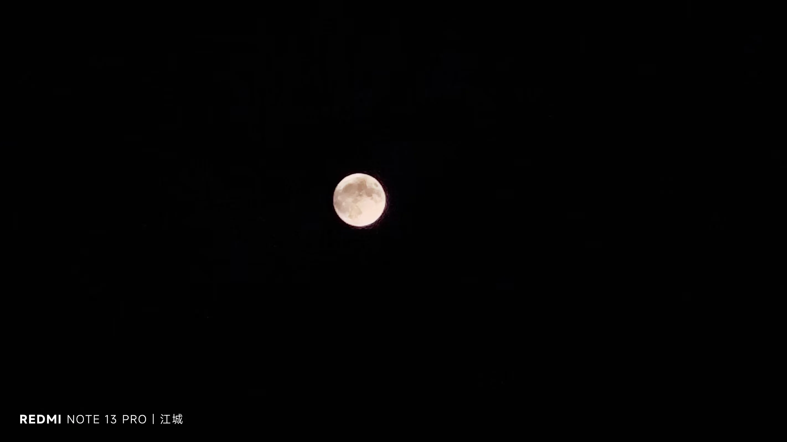
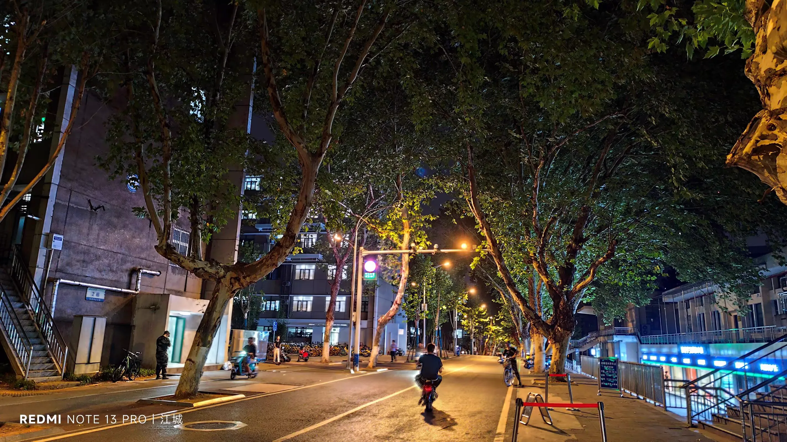
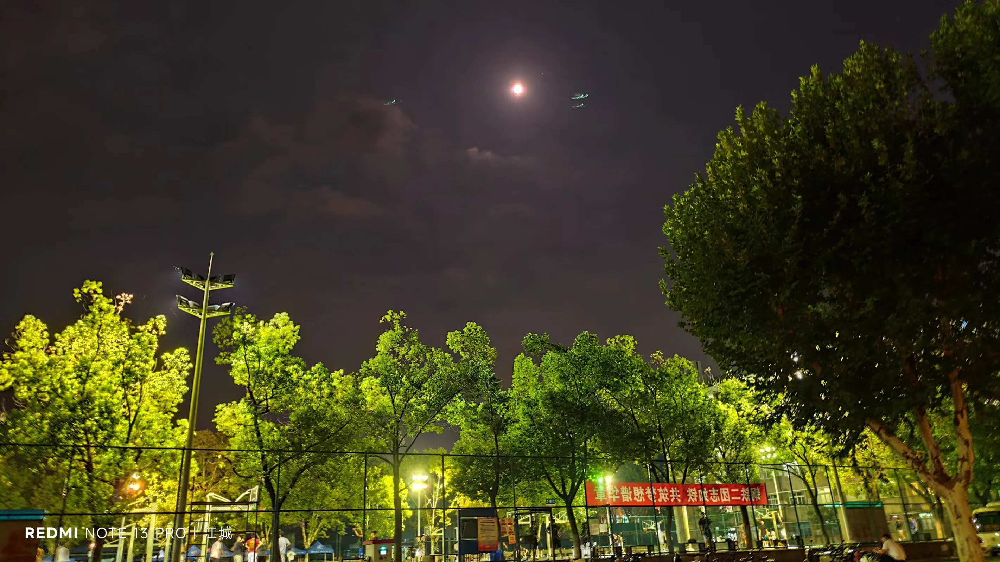
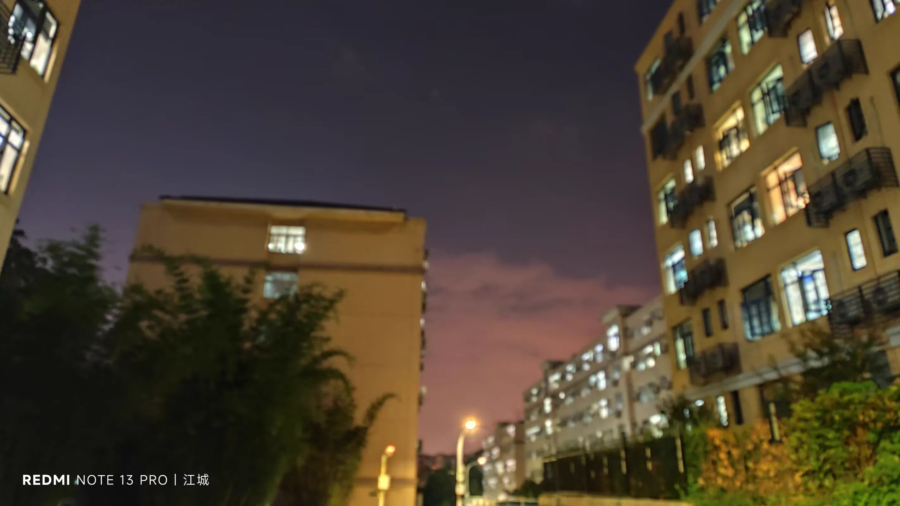
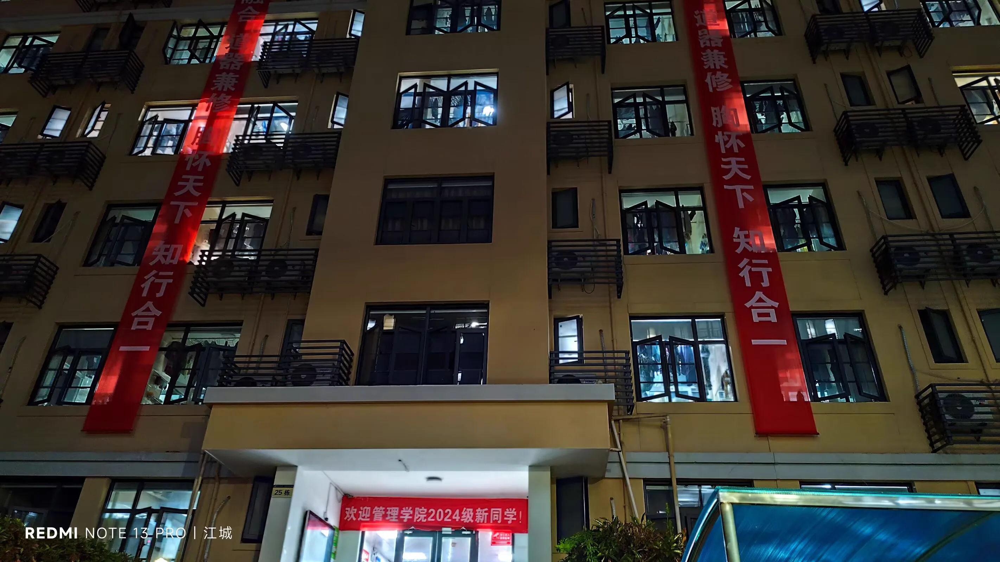
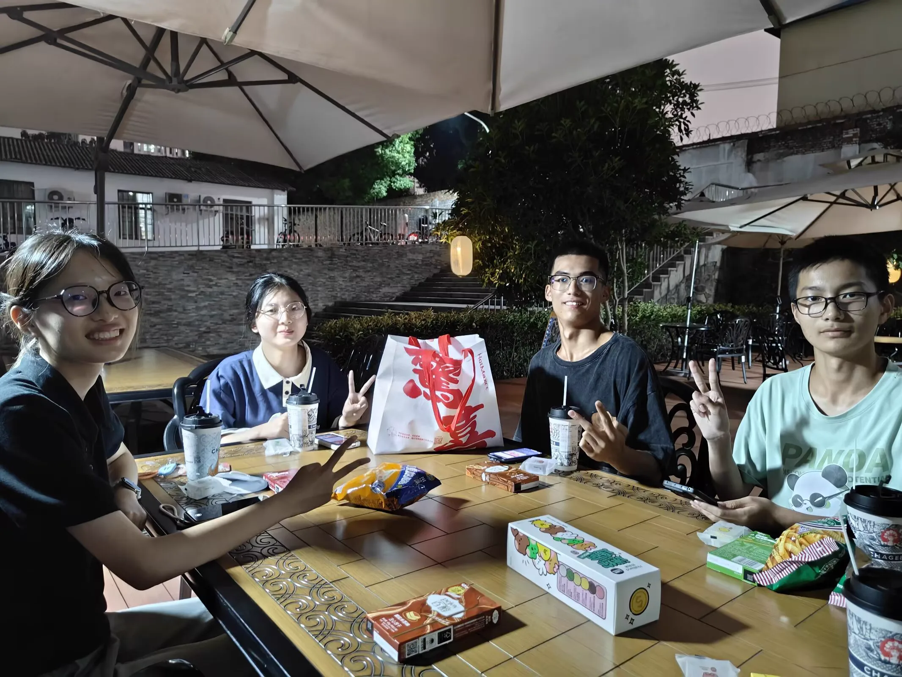

Journal · 2024-09-18
湖北省武汉市
闲乘月，夜同游。 雪夜访戴，月夜访程。 乘兴而去，兴尽而归。 从1037号森林，到415号森林。
漆同桌 : 别去森林了，去断背山 2024年9月17日 22:36 柴江赣北 回复漆同桌 : 组团去！武汉的校友一起去！ 2024年9月17日 22:40 柴江赣北 回复漆同桌 : 刚好我想摇人出去玩！ 2024年9月17日 22:41 柴江赣北 回复漆同桌 : +1在暑假再三邀我至汉，我竟没时间，太可惜了…… 2024年9月17日 22:43
Roaming at leisure in the moonlight, wandering together through the night. Visiting Dai on a snowy eve, visiting Cheng on a moonlit night. Setting out on a whim, returning once the whim is spent. From Forest No. 1037 to Forest No. 415.
漆同桌 : Forget the forest — let's head to Brokeback Mountain 2024年9月17日 22:36 柴江赣北 回复漆同桌 : Let's get a group together! All the Wuhan alumni, come along! 2024年9月17日 22:40 柴江赣北 回复漆同桌 : Perfect timing — I've been meaning to round people up to hang out! 2024年9月17日 22:41 柴江赣北 回复漆同桌 : +1 invited me down to Wuhan again and again over the summer, and I never had the time — what a shame... 2024年9月17日 22:43
Flâner au clair de lune, errer ensemble dans la nuit. Rendre visite à Dai par une nuit de neige, à Cheng par une nuit de lune. Partir sous l'élan du cœur, revenir une fois l'élan épuisé. De la forêt no 1037 à la forêt no 415.
漆同桌 : Laisse tomber la forêt, allons plutôt à Brokeback Mountain 2024年9月17日 22:36 柴江赣北 回复漆同桌 : On forme un groupe ! Tous les anciens de Wuhan, ensemble ! 2024年9月17日 22:40 柴江赣北 回复漆同桌 : Tombé à pic, je voulais justement rassembler du monde pour sortir ! 2024年9月17日 22:41 柴江赣北 回复漆同桌 : +1 m'a invité à Wuhan à plusieurs reprises cet été, et je n'ai pas eu le temps, quel dommage... 2024年9月17日 22:43
Müßig im Mondschein, gemeinsam durch die Nacht gestreift. Wie der Besuch bei Dai in einer Schneenacht, bei Cheng in einer Mondnacht. Aufbrechen, solange die Laune währt, und heimkehren, wenn sie verflogen ist. Vom Wald Nr. 1037 zum Wald Nr. 415.
漆同桌 : Vergiss den Wald, fahren wir lieber nach Brokeback Mountain 2024年9月17日 22:36 柴江赣北 回复漆同桌 : Lasst uns eine Gruppe bilden! Alle Wuhaner Alumni, kommt mit! 2024年9月17日 22:40 柴江赣北 回复漆同桌 : Genau richtig, ich wollte sowieso Leute für einen Ausflug zusammentrommeln! 2024年9月17日 22:41 柴江赣北 回复漆同桌 : +1 hat mich den Sommer über immer wieder nach Wuhan eingeladen, und ich hatte keine Zeit, wirklich schade … 2024年9月17日 22:43







